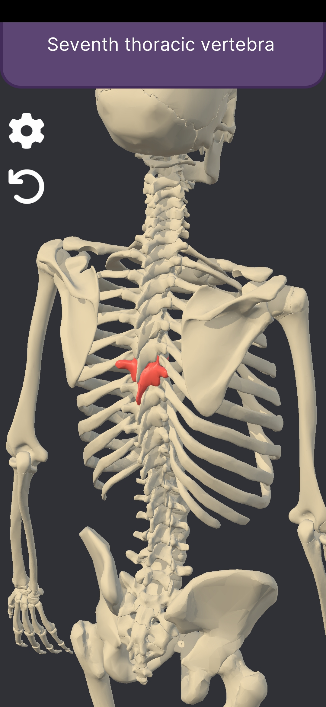
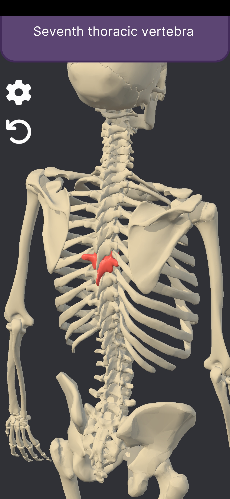

Skeleton Scholar
This is a project I made as part of my final thesis in Tallinn University of Technology. It is an Android application for learning anatomy with the help of 3D models. The full thesis is available to read in Estonian here.
 

This application is intended for studying anatomical terms through interactive learning. It features an anatomically correct 3D model of a human skeleton that can be rotated, scaled and moved freely in 3D space. By selecting different parts of the model, the user can see the anatomical term associated with the bodypart in either estonian or english.
I first analyzed different methods that can be used for displaying 3D models on Android devices in order to determine the most suitable technology for this project. For this I created 3 separate prototype applications using different technologies and tested their performace, as well as evaluated how difficult they were to develop. The results are combined in the table below:
| Used technology | Application size (MB) | Framerate (FPS) | GPU memory use (MB) | subjective evaulation of difficulty |
|---|---|---|---|---|
| Sceneview | 33.38 | 60 | 78.6 | Medium |
| Babylon React Native | 124.0 | 60, but freezes on interaction | 61.0 | Difficult |
| Unity | 65.18 | 60 | 53.1 | Easy |
Based on these results, I decided that Unity is the most appropriate tool to use. I then wrote down a list of requirements and tested a few analogous applications to determine potential UX problems that apps like this may have.
The 3D models I used originate from the website BodyParts3D, which is managed by DBCLS (Database Center for Life Science, a Japanese research institute). The models are distributed under the CC BY-SA 2.1 JP license. I modified the models to reduce polycount and fix visual errors.
In the 3D view of my app, I apply all transformations on the camera object and the 3D model itself is static in the scene. The user cannot tell the difference, but it makes certain things easier for me.
Object scaling and view drag are pretty straightforward. For scaling, I calculate the distance between the two touch points and I compare it to the same distance on previous render. View drag works similarly, only here the touch positions are used to find the movement vector instead.
Rotation was the most difficult of the 3D transformations because it requires some level of understanding of both quaternion and Euler rotations. In my app I keep the X and Y rotation in variables and add or remove from them whenever I drag with my finger. Rotation is calculated from the starting position, based on the values of these variables.
I wanted the app to support both English and Estonian. I used CSV files for handling translation (each row in a file is a key-value pair, where the key is the name of the 3D object and value is the corresponding anatomical term). To make the CSV files I wrote a python script that calls the google translate API. Of course there were many mistranslations which had to be manually corrected, but it gave me a base to work with. The app is designed in such a way that adding new translations is as simple as creating a new CSV, placing it in the appropriate folder, and rebuilding the project.
I continued working on this project even after defending my thesis and I was very close to publishing it on Google Play. Unfortuanetly I got frustrated with their 20 tester requirement and lost interest in publishing on their platform as a result. Before quitting I managed to reach 12 testers and their feedback was very positive.